Daria Ryzhikova
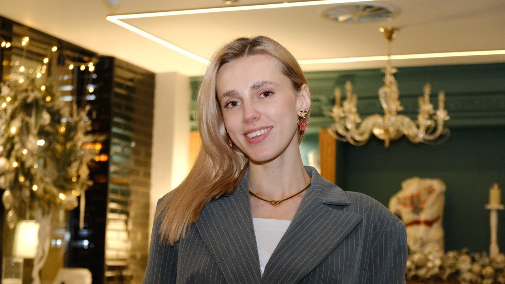
Wrote the growth roadmap for a new marketplace inside the bank, and ran it → +18% first-purchase conversion
See the work →Driver and partner acquisition marketing in 6 MENA & Africa markets → a segment I built from zero delivered 17% of DR Congo's new cars
See the work →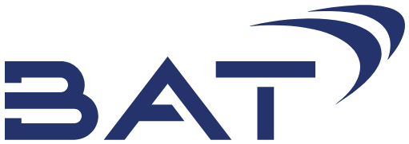
Global Graduate Programme — four rotations in 18 months → promoted to Marketing Manager
See the work →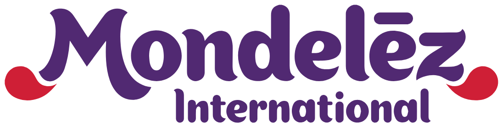
My first brand → launched a game 2.3M people played, and set Russia's 2020 record for a branded TikTok challenge
See the work →The bottleneck was cars, not drivers
Kinshasa: 15 million people and some of the highest fares in Africa — and not enough cars to serve them. The fleet was ageing, imported second-hand, and no local dealer sold anything cheap enough for taxi work. Drivers were not the bottleneck. Cars were. I went after a segment nobody had marketed to: the people who own the cars.
Two audiences, and they needed opposite approaches. Owners of one to three cars could be reached online. Investors and fleet owners with four or more had to be met face to face — nobody hands over capital because of a banner.
Online acquisition — owners of 1–3 cars
Paid ads carried one promise: put your car to work and earn up to $1,600 a month. A tap took the lead straight into WhatsApp, where the first question the bot asked — do you actually own a vehicle? — cut 45% of leads before a human said a word. What was left went to thirteen freelance sales agents, who walked owners through how Yango works, what a car actually earns, and how to manage the driver behind the wheel.
Most owners already had a driver (80%). Some needed help finding one (15%); a few wanted to drive themselves (5%). Each route ended in the same place: a training session at the office, owner and driver together.
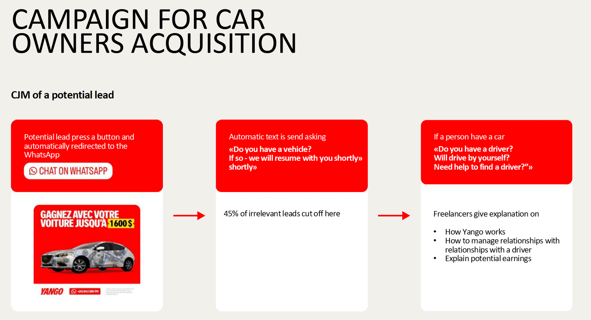
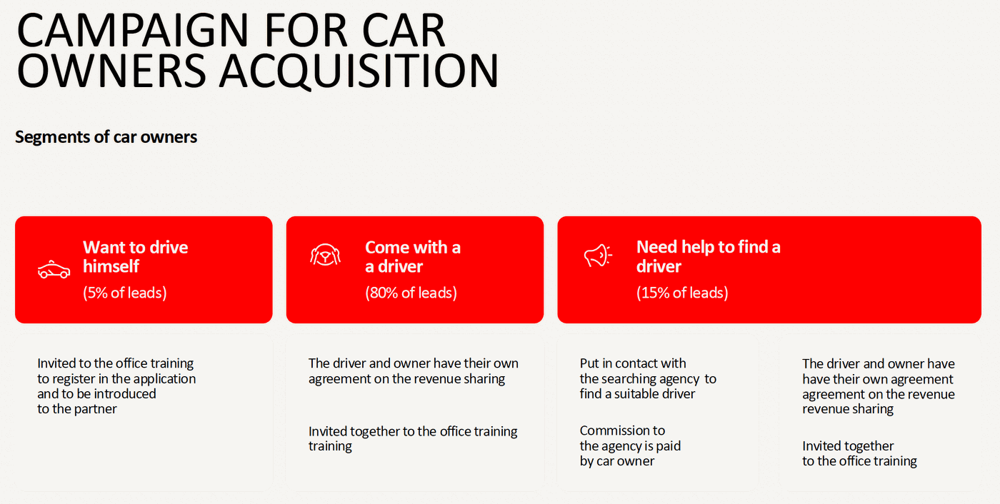
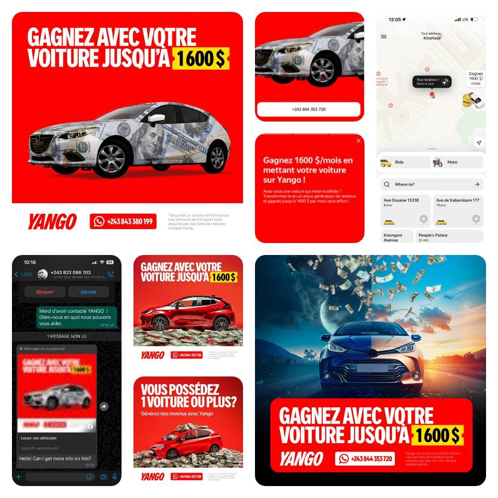
Offline acquisition — investors and car owners with 4+ cars
Investors do not respond to advertising. They had to believe we were worth backing, and that meant putting the proof on stage. A Yango partner told his own story. The regional head of Bajaj, the three-wheeler manufacturer, flew in from Uganda. Watu, the asset-financing lender, explained how a driver gets a smartphone on credit. CFAO put together a Suzuki package priced for taxi work.
Every owner left with a payback model for the exact car they were considering: purchase price, financing terms, what it earns on Yango, and how long until it pays for itself. I sent 152 personal invitations and chased every one by hand. The event ran on LinkedIn too — through Yango's page, Orange's, and the country manager's own.
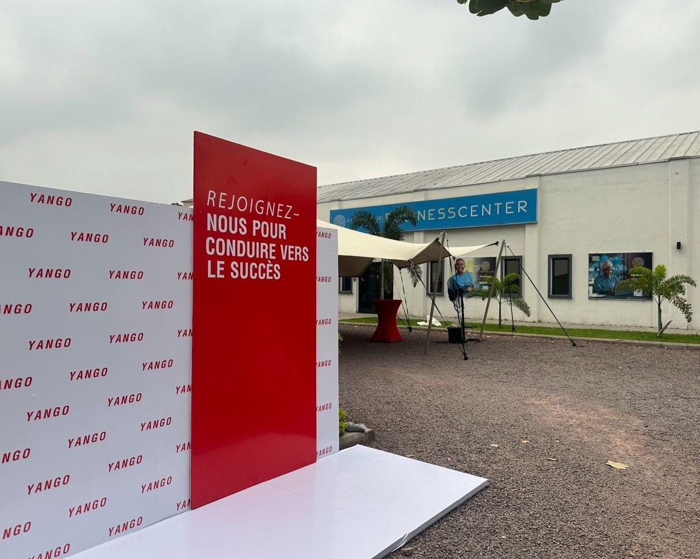
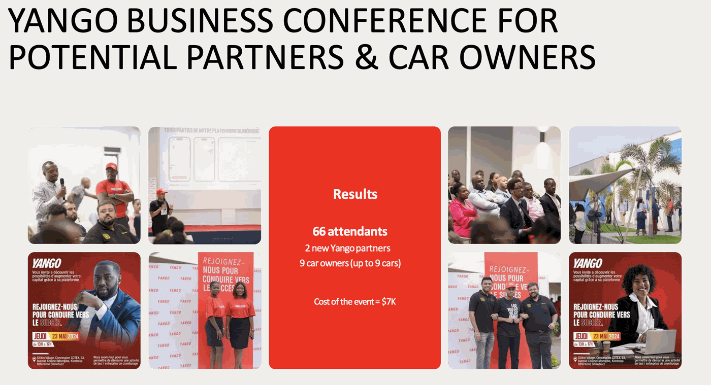
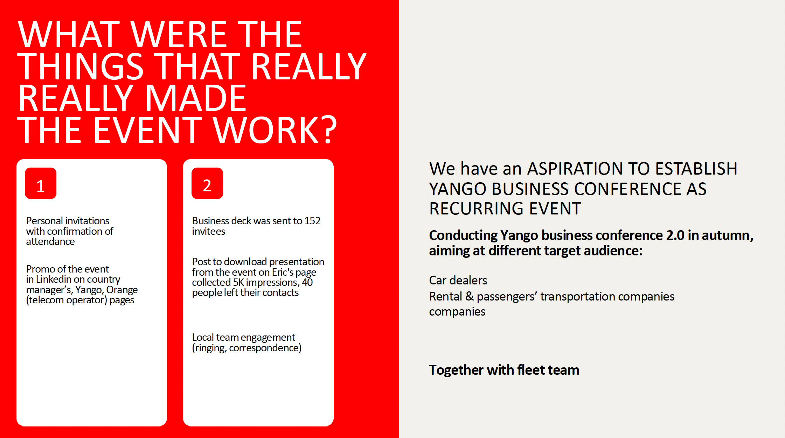
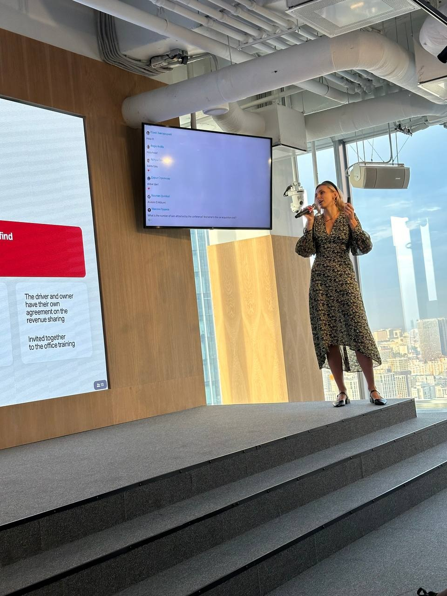
A new marketplace inside the bank.
Shopping is T-Bank’s move beyond banking: a marketplace built straight into the app, launched into a market that Ozon, Yandex and Wildberries already owned. My job was to turn the bank’s customers into its shoppers.
Millions of the bank's customers were one tap away from Shopping and had never bought a thing there. The product was new, and few people knew what it was for.
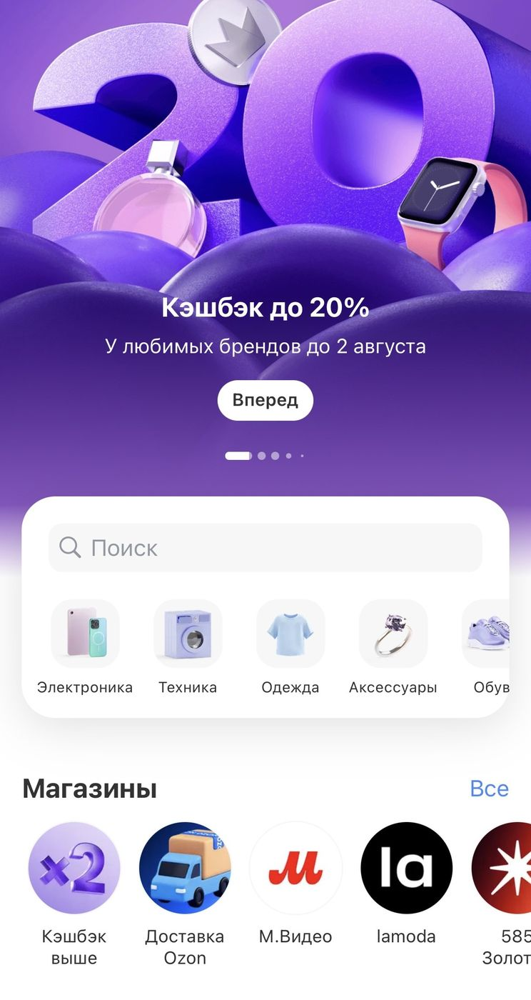
2M customers used Shopping. 11.6M could
I led the cross-functional team that had to build it — ten people across analytics, content and CRM.
- Core growth — the cashback funnel end to end.
- Seasonal — category pushes and same-day cashback around the big moments: New Year, Black Friday, and the cashback calendar that runs between them.
- Partner stability — the rules and onboarding that keep a partner’s promo alive from setup to checkout.
- Personalisation — the trigger system, how often we message people, and an ML scoring model built with the analytics team.
I pulled every campaign the team had run into one place and grouped them by mechanic, which showed which ones had actually moved conversion and which had never earned their place. That became the playbook the team still runs on.
I scored every initiative on reach, impact and effort before it made it into the plan, and defended it to the product and CRM leads each quarter.
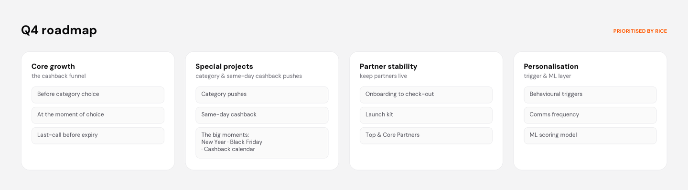
They had already chosen us. They just never spent the cashback
Every month, T-Bank customers choose the categories where their cashback pays extra. The ones who chose Shopping were the closest thing the marketplace had to a ready-made buyer.
Customers picked Shopping for their boosted cashback — and then never used it.
A sequence built for exactly that group: from the day they picked the category to a final push 48 hours before the cashback expired.
Reacting to the customer, not the calendar
Campaigns went out on a schedule. Everyone got the same message on the same day, whatever they were doing.
Campaigns fired on behaviour. What a customer had just done decided what they saw, and when.
- A deposit hit the account — above a set amount, with a comms sequence built to turn it into a purchase in Shopping.
- A purchase in a category Shopping also sells.
- A basket left behind.
- Weeks without opening the app.
- Missed cashback — the exact sum a customer had left unclaimed, instead of another reminder of the rate.
The deposit trigger was the strongest of them all. Every trigger ran against control before it scaled.
Every partner promo used to cost us a campaign
Every promo was built from scratch. Each launch pulled in the whole team, and one partner with nothing running could leave a category empty.
Two tiers, one packaged kit each. A partner now launches from a template, taking almost none of the team's time.
I split the partners into two tiers, Top and Core. I ranked them on GMV and brand pull — and, above all, on which audience a brand would bring to the storefront just by appearing there. Each tier got a packaged launch kit: templates, rules and assets, ready to go.
+18% first-purchase conversion in Shopping
Against the previous quarter — the quarter the roadmap ran, with 50+ A/B tests behind it.
Owned driver and partner acquisition marketing in 6 MENA & Africa markets — early-stage, mature and fiercely competitive
- Owned: everyone who drives for Yango — drivers, fleet partners and car owners (a segment I built from zero). Brand platform and positioning, GTM launches, acquisition and retention, product changes, research.
- Stakeholders: HQ leadership and the country teams in 6 markets — defended strategy and budget at quarterly planning
- Budget: $400K / year across 6 markets
- Teams: project-based, up to 20 people, HQ and local
A regulatory shock was about to halve the market. I rebuilt what we promised drivers
A 2024 transport reform meant only licensed cars could stay on the road: of ~40,000 cars working the market, about half were set to disappear within a year. Our supply was going with them. We had six months to get drivers licensed.
Everything we promised drivers rested on the bonus programme. Six focus groups told me it was backfiring: drivers read the thresholds as a trap — work more, hit the target, or get nothing.
After a shock, “earn more” does not read as opportunity. It reads as pressure. What drivers wanted was simply to keep working.
Earn more. Hit the bonus threshold, or get nothing.
Stay in the profession. We'll pay for your licensing exam.
I rebuilt the promise around partnership: respect, support and practical help getting licensed.
- The reach — OOH, YouTube, seeding in WhatsApp and Telegram driver groups, earned PR and partner channels
- The money behind it — I cut the media that wasn't converting and paid for drivers' licensing exams directly
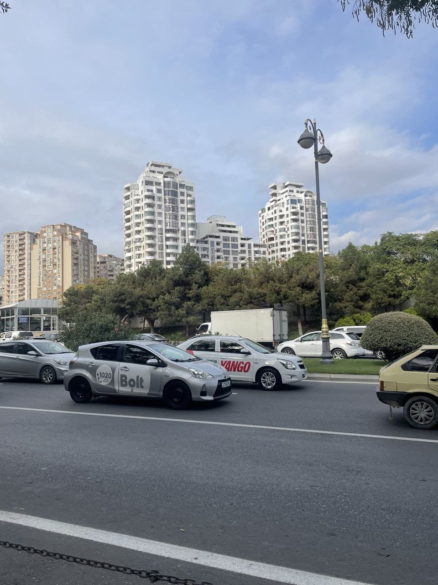
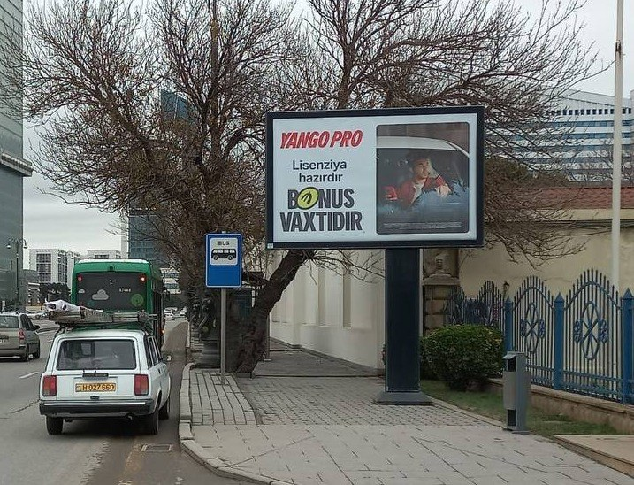
Only 12% of new drivers reached trip five. I rebuilt the six days before it
I interviewed new drivers in-app — and, more usefully, drivers who had already quit. Ethiopia was a low-trust market: they didn't understand the bonus system and didn't believe a new taxi player would pay them. The dashboards showed how few newcomers reached the fifth trip, where bonuses start and a driver stays. The churn interviews showed why.
I tested an alternative funnel: not a campaign, a product. A Telegram bot called How to Pro walked a newcomer through the first six days — 23 messages, 7 videos, branching on what the driver answered, in English and Amharic. I designed the flow, the UGC-based content and the logic of what a driver sees and when. The tech team built it.
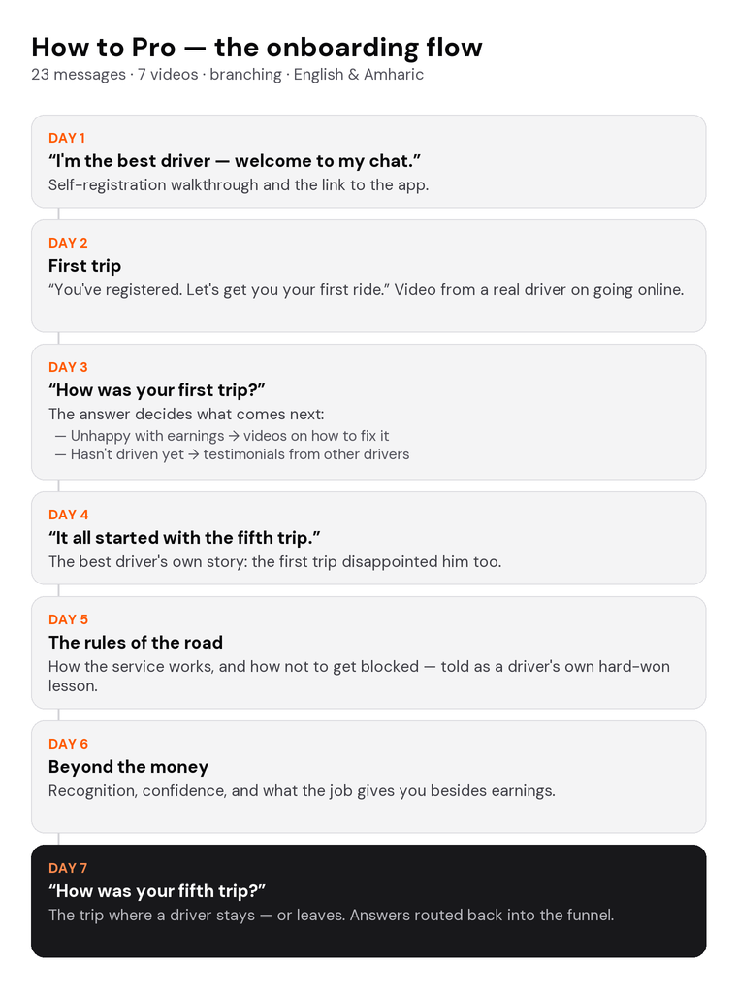
Then I shut it down. The bot was doing a job the product should do itself, and what it had learned belonged inside the app — the onboarding screens it inspired went straight into the product. I put my own effort into an owned channel instead: a Telegram community for drivers and partners. 300 → 4,000 in six months through word of mouth — content, live streams, contests. It cost nothing to run, and has since passed 11,000.
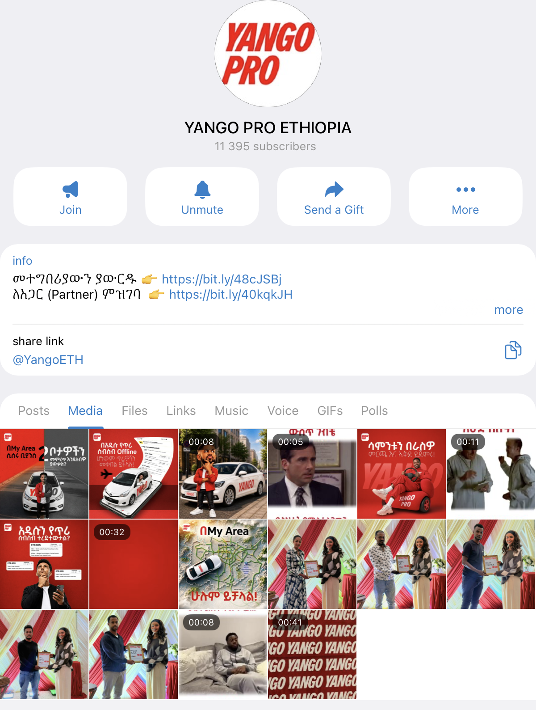
Yango Cares — rewards our partners paid for, not subsidies we did
Drivers were skipping orders. I built a competition that rewarded the opposite.
- The programme — 120 completed trips in a month, no skips, no cancellations.
- The prizes — a month of unlimited internet from Ethio-Telecom, a grocery gift card, and a set of tyres for the driver with the most trips. Partners funded every one of them.
- The ritual — winners announced every month, photographed with their prizes, posted in the driver community I had built. Recognition only works when someone is watching.
- The results — February was the baseline. By April, the share of drivers reaching their tenth completed trip had tripled.
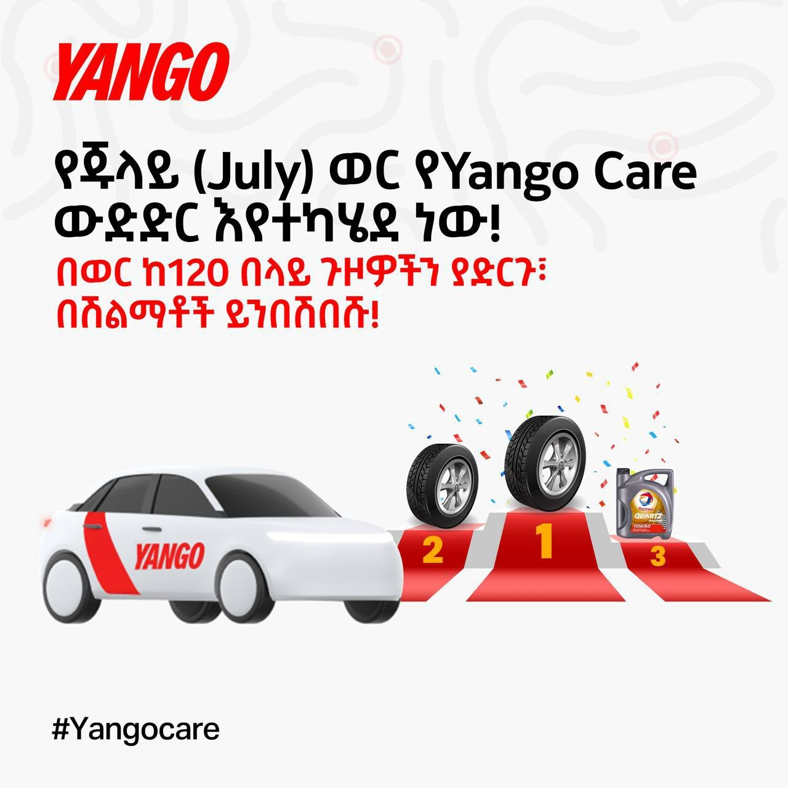
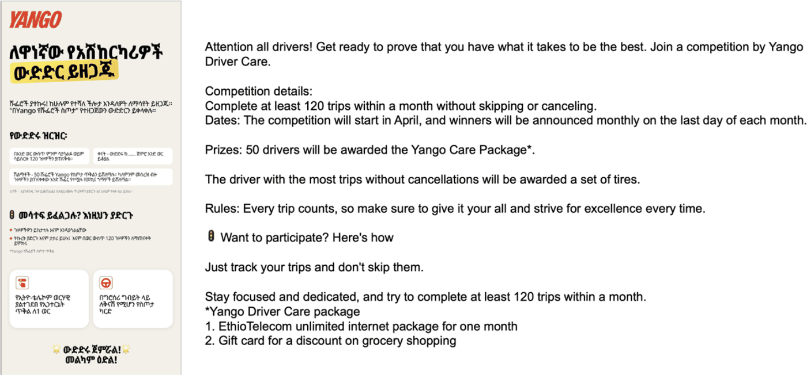
The same model, different partners. Orange, the telecom, gave 900 new drivers a free month of mobile internet; Watu leased them smartphones on preferential terms.
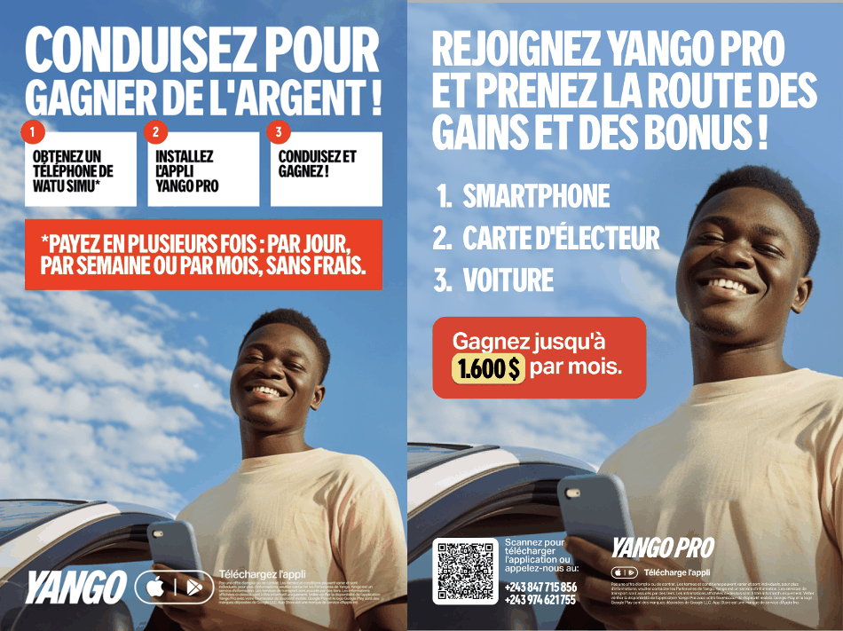
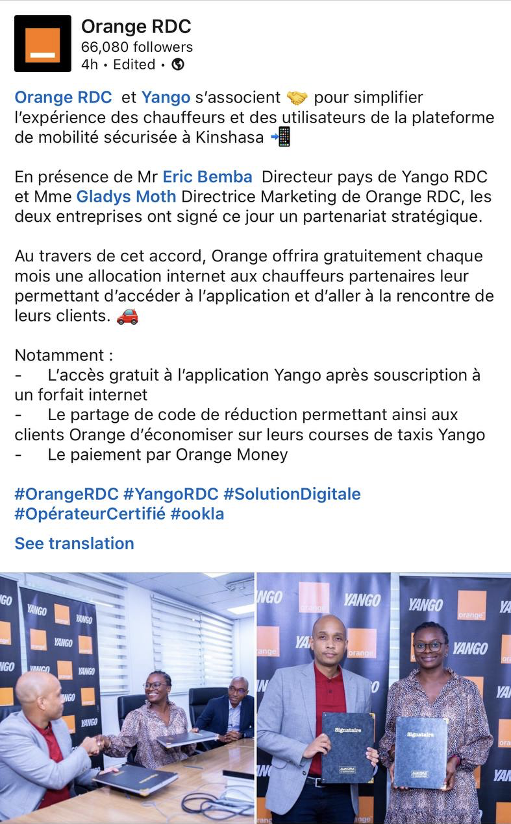
The research that set budget, positioning and go/no-go
I commissioned the research across six markets and matched each study to the question it had to answer:
brand-health tracker, driver profile segmentation, funnel analytics, A/B tests
focus groups, in-app interviews with new and churned drivers, driver happiness study
a market one-pager before every launch, unit economics per segment, concept testing before a promise goes to market
It decided real things. It told us what to promise drivers in Azerbaijan. It found that Ethiopia was losing drivers in their first six days, not at acquisition. And it stopped a planned campaign in DR Congo's second city before a dollar of it was spent.
A leadership programme — 4 rotations in 18 months
Selected for BAT's Global Graduate Programme, a flagship future-leaders track: 18 months, 4 rotations — Retail Planning → Sales & Insights → Customer → Brand. At the end I presented a final project to the Marketing Leadership Team and moved into a Marketing Manager role. It's a regulated category, so I've kept this deliberately general — no brand names.
You can't advertise this category. Everything runs through the people behind the counter
With advertising off the table, the only channel left is retail staff. The go-to-market ran through the chains — segmentation, positioning and trade — plus a partner app for retail outlets, the one digital channel the rules allow. Staff trained inside it, took paid tasks that pushed sales and picked up the POS materials they needed. 16,000 monthly active users, across 500+ outlets.
Foreign brands were leaving. Shoppers assumed what stayed had got worse
My hardest project was a reputation campaign: foreign brands were leaving Russia, and shoppers assumed anything still on the shelf had got worse. I built it on one honest message — the factory is 25 years old, we are staying, the quality has not changed.
In the field rotation I built an incentive programme for 500+ sales reps and automated the distribution tracking behind it, which saved the analytics team about seven hours a week.
My first brand — and a new generation to win
Gum is the definition of an interchangeable purchase — at the till, nobody cares whether it says Dirol or Orbit. The job was to give a new generation a reason to care, and to move it off the shelf.
2.3M people played. Every coin started with a receipt
I built a game on VKontakte, Russia's biggest social network, and owned it end to end: concept, mechanics, agency production, prizes and the retailer terms. I used the mechanic everyone was hooked on that year — tap, collect coins, spend them. But every coin started with a real purchase. You scanned an X5 receipt with gum on it, and the more you scanned the more you could win. The prizes were merch people actually wanted, not discounts.
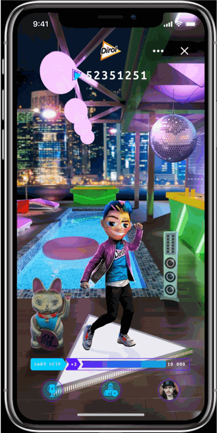
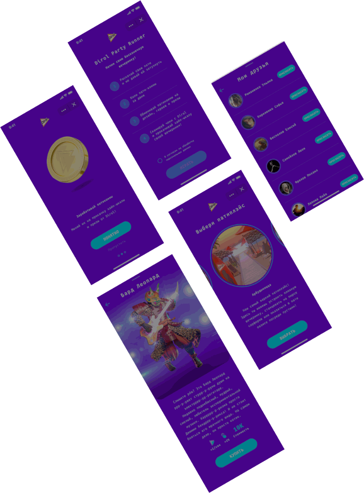
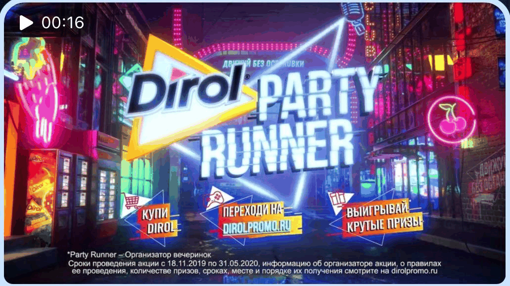
A black chewing gum set Russia's 2020 record for a branded TikTok challenge
For new-flavour launches I ran TikTok UGC challenges. The one built around Dirol White with activated charcoal, a black chewing gum, set the Russian branded-challenge record of 2020. For the coconut-strawberry launch I ran the first gum “drop” in Russia, with the perfume brand Demeter: a format borrowed from sneakers, and the press picked it up.
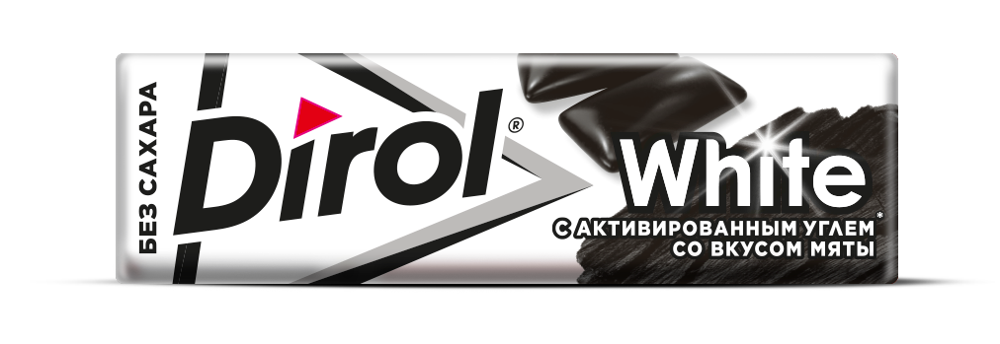
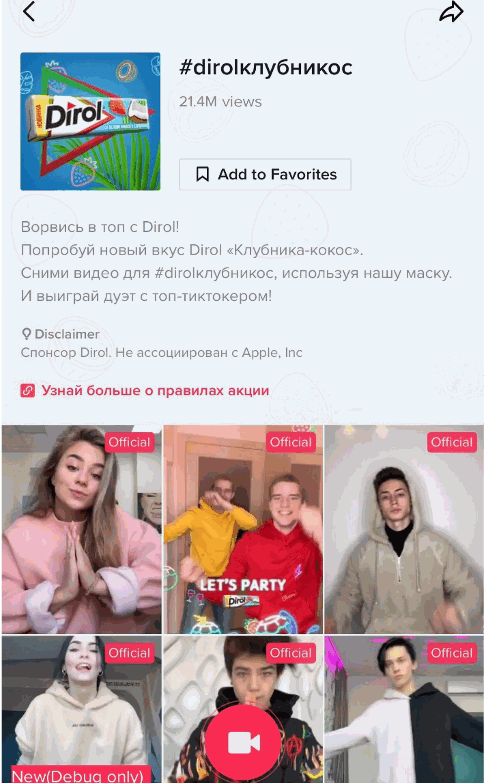
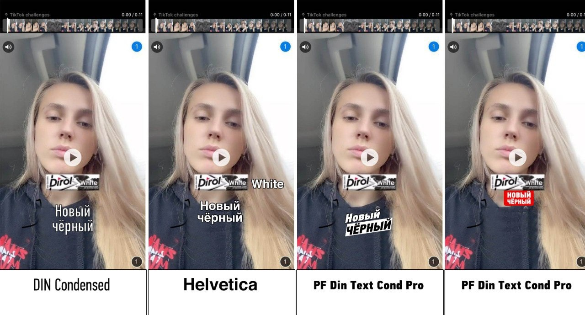
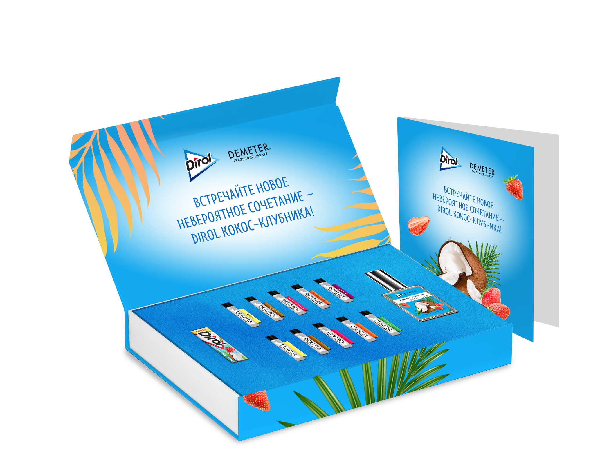
In the room
Presenting, pitching and the day the DR Congo case landed.
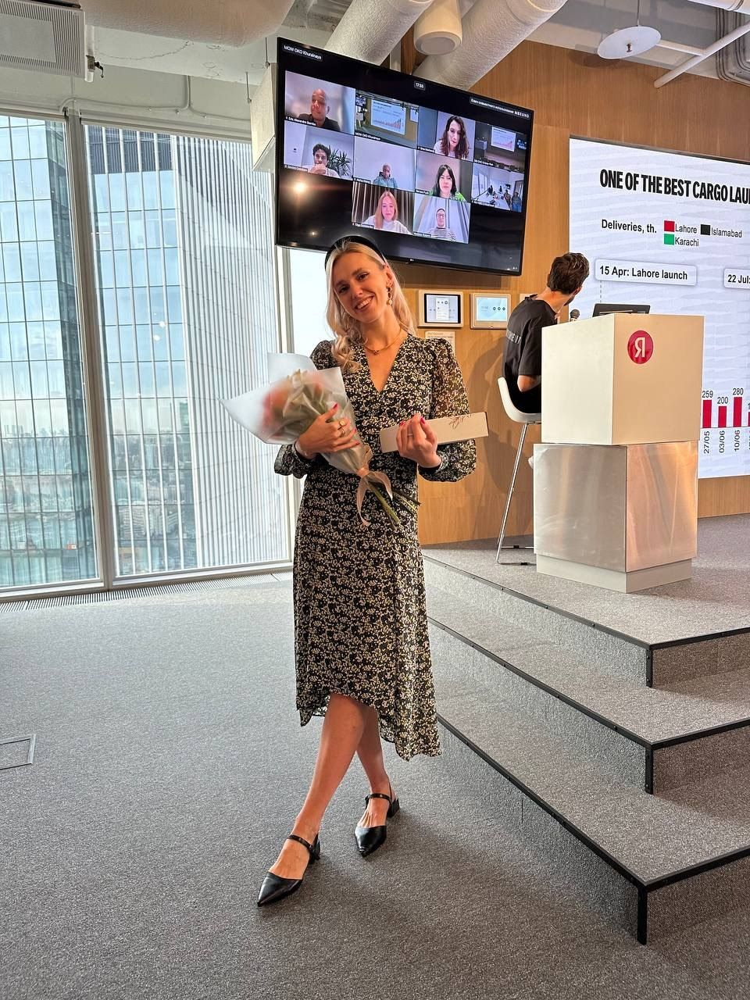
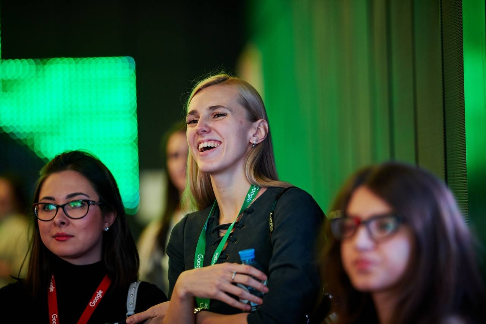
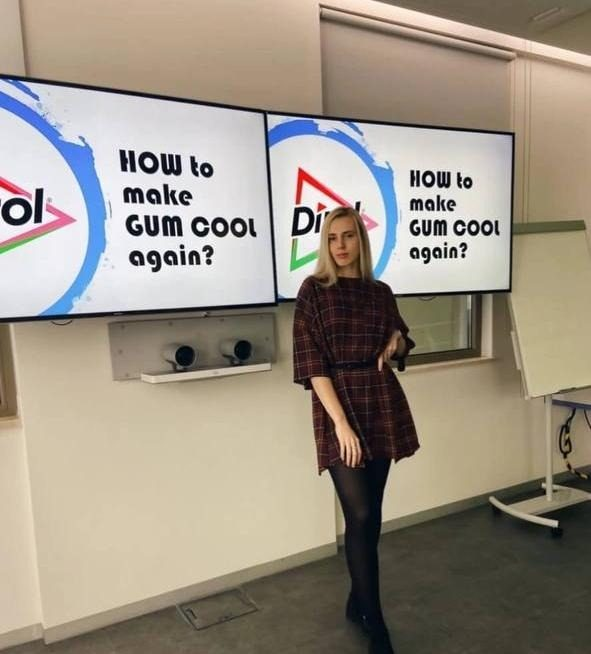
What people I worked with say
She doesn't just coordinate — she sets a clear vision, translates it into actionable plans, and brings everyone along through data-driven decision-making. She can design a GTM framework and then go deep with product, analytics and CRM. I would strongly recommend Daria for senior product marketing or growth roles.
Olga Nekhaichik — Head of International Drivers & Partners Marketing at Yango · Daria's manager
I had the privilege of being mentored by Daria — exceptional managing skills and broad expertise combined with a welcoming attitude. An aspiring leader, passionate creator and outstanding manager — an asset to any team.
Maryia Nikitsina — my mentee on the Yango graduate program
Both recommendations are published on my LinkedIn profile.
Let's talk.
New market, new segment, new product nobody's in the habit of using yet — that's the work I'm best at. Tell me what's stuck.